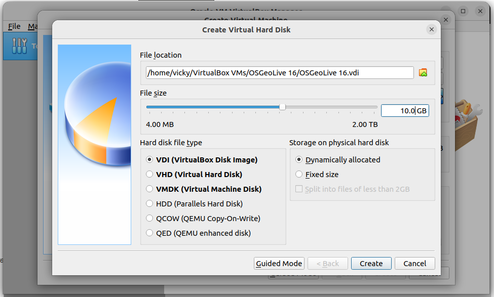
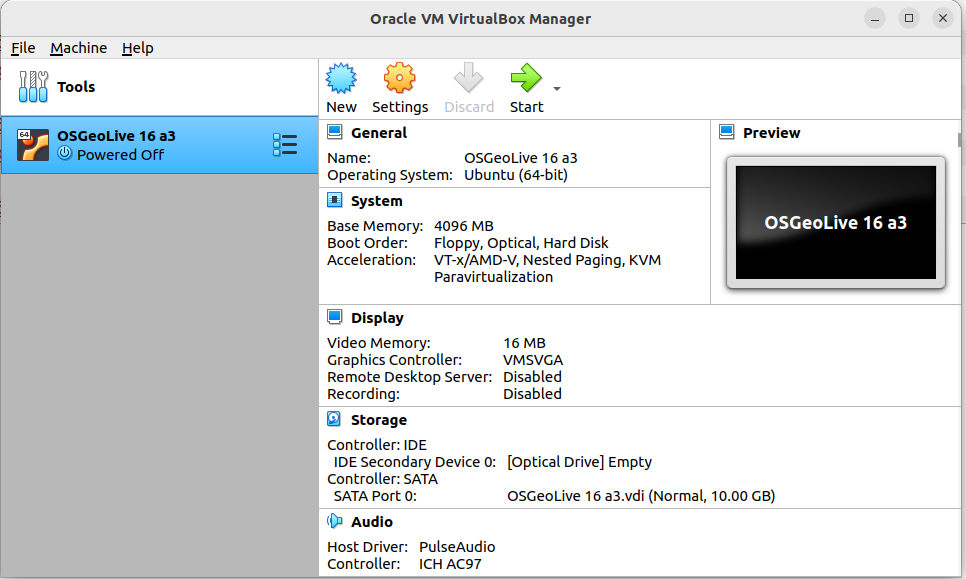
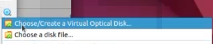
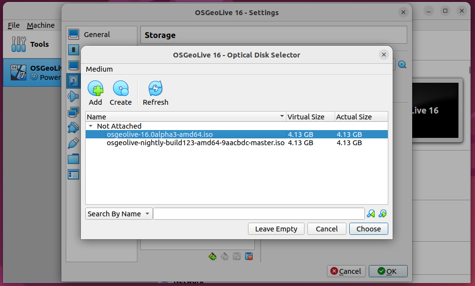
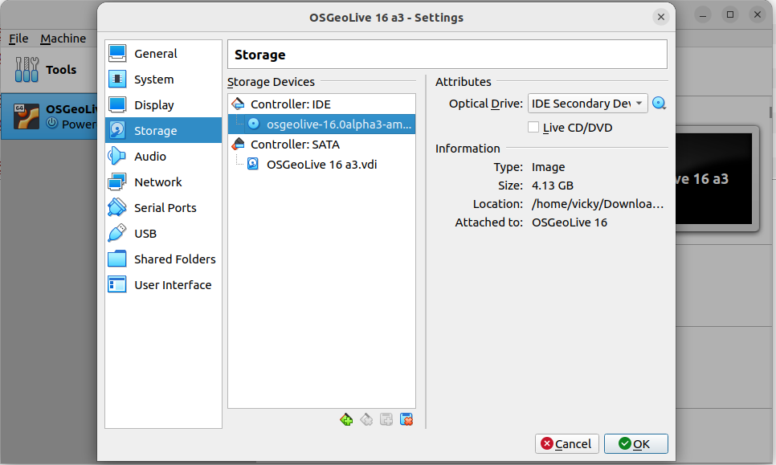
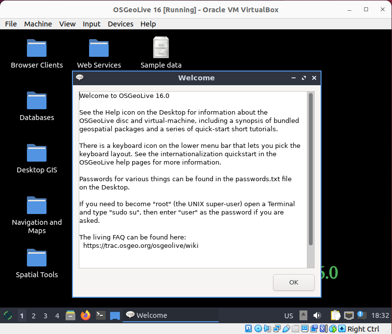

1. OSGeoLive のインストール¶
必要なツールはすべて OSGeoLive で入手できます。
重要
ワークショップのイベントに参加する前に、上記いずれかの方法または 付録: インストール の手順によって、お使いのコンピュータで OSGeoLive を使える状態にしておいてください。
このワークショップでは、VirtualBox 上の OSGeoLive を使用します。
1.1. VirtualBox をインストール¶
ここでは VirtualBox のインストール方法を概説します。インストールの詳細は VirtualBox のドキュメントを参照してください。
Linux ディストリビューション:
/etc/apt/sources.list に次の行を追加します。ディストリビューションに応じて <mydist> を自分のディストリビューション名に置き換えてください。
deb https://download.virtualbox.org/virtualbox/debian <mydist> contrib
キーを追加:
wget -q https://www.virtualbox.org/download/oracle_vbox_2016.asc -O- | sudo apt-key add -
wget -q https://www.virtualbox.org/download/oracle_vbox.asc -O- | sudo apt-key add -
VirtualBox を次のコマンドでインストールします:
sudo apt-get update
sudo apt-get install virtualbox-6.1
より詳しい最新の情報は こちら を参照してください。
1.2. VirtualBox 上の OSGeoLive¶
1.2.1. OSGeoLive 17 のダウンロード¶
このインストール方法は OSGeoLive の iso 配布形式に対応するものです。それ以外のインストール方法については OSGeoLive を参照してください。
注釈
この節の画像は、お使いのシステムにインストールされている VirtualBox や OSGeoLive のバージョンとは異なる場合がありますが、作業の流れは同様です。
https://download.osgeo.org/livedvd/releases/17/ から
osgeolive-17-amd64.iso をダウンロードします

ダウンロードしたファイルは Downloads ディレクトリに保存されます。

1.2.2. 仮想マシンの作成¶
VirtualBox を開きます

New をクリックし、次の情報を入力します
Name: OSGeoLive 17
Type: Linux
Version: Ubuntu (64-bit)
Memory size: 4096
Hard disk: Create a virtual hard disk now

Create をクリックし、次の情報を入力します
File location: 仮想ハードディスクの適切な保存場所を選びます
File size: 10.0GB
Hard disk file type: VDI (VirtualBox Disk image)
Storage on physical hard disk: Dynamically allocated

1.2.3. OSGeoLive の ISO のインストール¶
Storage には次のように表示されています:
- Controller:
IDE
- IDE Secondary Device 0:
[Optical Drive] Empty

VirtualBox の設定項目から Storage を選び Empty をクリックします

小さなディスクのアイコンをクリックし Choose/Create a Virtual Optical Disk を選びます

ISO を保存した場所に移動します

Empty ではなく、設定した ISO が表示されるようになります

インストールは次のようになります:
- Controller:
IDE
- IDE Secondary Device 0:
[Optical Drive] osgeolive-10.0alpha3-amd64.iso (4.13 GB)

1.2.4. OSGeoLive の起動¶
Start ボタンをクリックし、続いて capture ボタンをクリックしてマウスの動きを取り込みます

Try or Install Lubuntu をクリックします

注釈
OSGeoLive のアカウントは user、パスワードは user です
数秒後に OSGeoLive が起動します

注釈
OSGeoLive のアカウントは user、パスワードは user です
1.3. Ubuntu へのインストール¶
postgresql を含めるようにパッケージソースを更新します
curl https://www.postgresql.org/media/keys/ACCC4CF8.asc | sudo apt-key add -
sudo sh -c 'echo "deb http://apt.postgresql.org/pub/repos/apt/ \
$(lsb_release -cs)-pgdg main" > /etc/apt/sources.list.d/pgdg.list'
PostgreSQL、PostGIS、pgRouting をインストールします
sudo apt-get update
sudo apt-get install -y \
osm2pgrouting \
postgresql-15 \
postgresql-15-postgis-3 \
postgresql-15-postgis-3-scripts \
postgresql-15-pgrouting